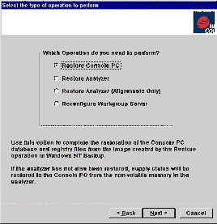
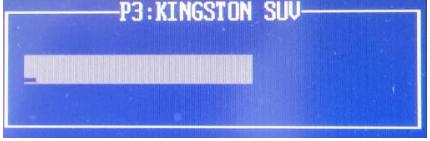

Restoring a Database for a Windows 8 or 10 Console PC with DxI Software 7.0.0 and Newer from Backup
This topic includes information about how to restore the database of a DxI console PC from the USB BACKUPDRIVE.
Note: The DxI Software must be installed before you perform this procedure.
Close applications.
On the Main Menu use the
Alt + F4 keyboard shortcut to open the dialog.
Type
Access2Support to close the application.
If the Fast Objects Server is present:
Use the
Ctrl + Alt + Delete keyboard shortcut to open the menu.
Select
Task Manager to open Task Manager.
On the Processes tab select
FastObjects Server.
Select
End Task.
Copy files from the USB BACKUPDRIVE.
Insert the USB BACKUPDRIVE into the USB connector on the console PC.
Press the
Windows logo key and type
File Explorer to open File Explorer.
In the USB BACKUPDRIVE copy the most recently saved backup folder.
Paste the folder into the
C:\NexGen\Console folder on the console PC. Choose to replace existing files.
Close File Explorer.
Use the Restore Utility to restore the backup files.
Press the
Windows logo key and type
Restore Utility to open the Restore Utility.
Note: If you are restoring the database onto a new console PC or after reimaging a console PC, you must first install the DxI software. The DxI software installation procedure will install the Restore Utility onto the console PC.
In the dialog, select
Next.
Figure 407: Restore Utility

Select
Restore Console PC and select
Next.
Select
Restore Registry and Database and select
Next.
Note: If an error message is displayed, be sure FastObject Server is no longer listed on the Processes tab in Task Manager. If it is listed, in Task Manager select
FastObject Server and select
End Task and retry restoring the database.
IP address information will be displayed. Select
Next.
Note: The following IP addresses are typical:
Component
IP Address
Console PC
192.168.2.3
Workgroup server
127.0.0.1
Analyzer
192.168.2.4
Select
Restore Supplies from Analyzer and select
Next.
Note: An error will occur if the analyzer unit or server IP address in the registry is incorrect. To restore the database, the analyzer unit must be turned on and it must be able to communicate using the TCP/IP network.
If the Delete Reagent dialog is displayed, you must identify and discard any punctured reagents that were used after the backup was created and that were off-board while restoring the database.
Select and delete off-board punctured reagents and select
Next. Discard the reagents.
Select and delete confirmed off-board unpunctured reagents and select
Next.
Note: When reagents are off-board, their status is not stored in instrument memory.
Select
Reboot and select
Finish.
Note: The console PC and the analyzer unit will automatically restart. The instrument may not appear to communicate for up to five minutes.
If you are restarting a Privacy & Security-compliant Windows 8 PC, you must type the password
Access2Admin to open Windows.
Figure 408: Password Prompt

If you could not successfully restore the database using the Restore Utility, you must manually replace the database folders.
Note: Do not perform this procedure if the Restore Utility successfully restored the database.
Press the
Windows logo key and type
File Explorer to open File Explorer.
Confirm that the
C:\NexGen\Console\Backup folder contains the folders and files for the most recently saved backup.
Copy the
NexStepBase and
EventBase folders from the
C:\NexGen\Console\Backup\DRW folder.
Paste the
NexStepBase and
EventBase folders into the
C:\NexGen\Console\DRW folder. Choose to replace existing files.
Close File Explorer.
Open the user interface.
Verify instrument operation.
On the Main Menu, confirm the software version displayed is correct. If necessary, update the software and the APF to the current versions.
On the Main Menu go to
Supplies > Bulk Suppies to view the status of the supply inventory. Load any required supplies.
When you restore the database, on-board expired or deleted reagent packs will be identified with question marks (???). Having one or two on-board packs with question marks might be normal. If the substrate supplies are empty, and if all on-board reagent packs are identified with question marks (???), you might have inadvertently selected
Restore Analyzer instead of
Restore Console PC in the Restore Utility, or running MFG Cleanup erased the AU test count and run time. To resolve the issue:
On the Main Menu go to
Diagnostics > Initialize.
Select
Clear all Positions and
Remap to remap the reagent storage.
Note: If there are on-board expired or deleted reagent packs identified with question marks (???), unload all reagent packs and confirm that reagent packs identified in reagent supply are actually unopened. Reload the reagent packs that are not marked with question marks (???).
Confirm the following items have been configured and are functioning correctly:
Printer setup
Auto Delete setup
Scheduled Backup
LIS
Re-enroll PROService.
If applicable, configure the LAS dynamic connection. See
Enabling DxI Dynamic LAS Interface for more information. The track connection from the instrument to the connector unit will be unaffected by the database restoration process.
Perform QC and ensure the results are within customer specifications and that there are no problems posting results to the restored database.